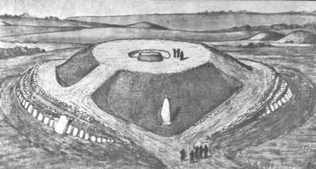
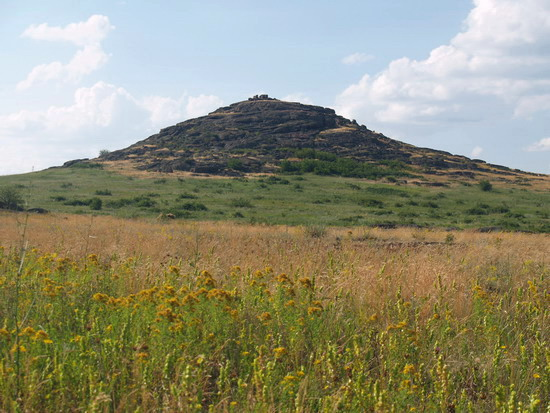
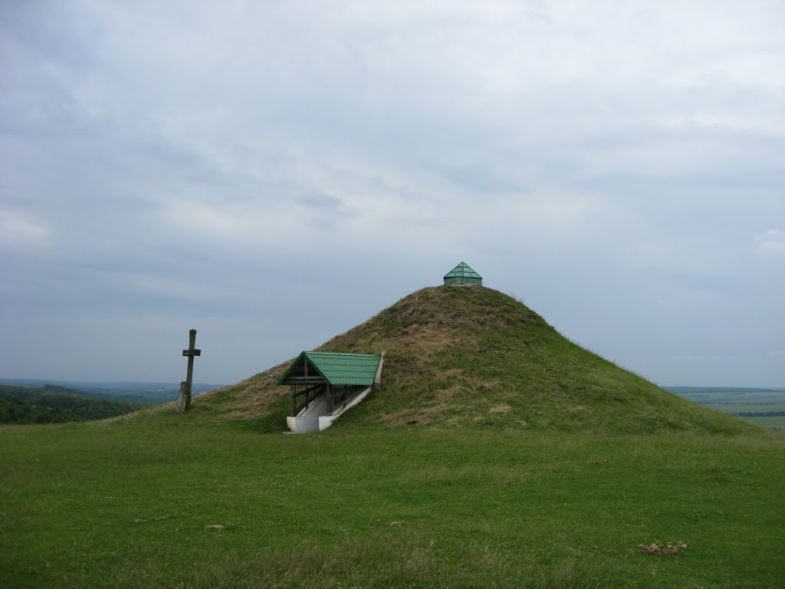
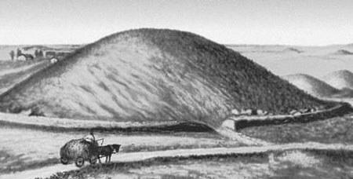

Пам'ятки України
Стародавня доба
До нової ери - Нова ераКургани кімирійців:
Курган Висока могила
   
Цікаві факти:
Висо́ка Моги́ла — великий курган 2-ї половини 3 — початку 1-го тисячоліття до н. е. біля с. Балок Василівського району Запорізької області. Досліджений 1971. Курган вміщував 25 різночасних поховань ямної культури, катакомбної культури та кіммерійської культури.
Інтерес становить поховання землероба 1-ї пол. 2-го тис. до н. е. В ньому знайдено дерев'яне рало (найдавніше з досі відомих орних знарядь на території Європи), крем'яні пластини, кам'яні шліфовані сокири і дерев'яну посудину.
В похованнях військової знаті кіммерійських племен 8-7 ст. до н. е. знайдено бронзові та залізні кинджали, золоту бляху від пояса, золоте окуття піхов кинджала, дерев'яну чашу, оздоблену золотими платівками на вінцях, золоту литу сережку, глиняний посуд, точильні бруски, мідний ніж, колчани з бронзовими та кістяними наконечниками стріл.